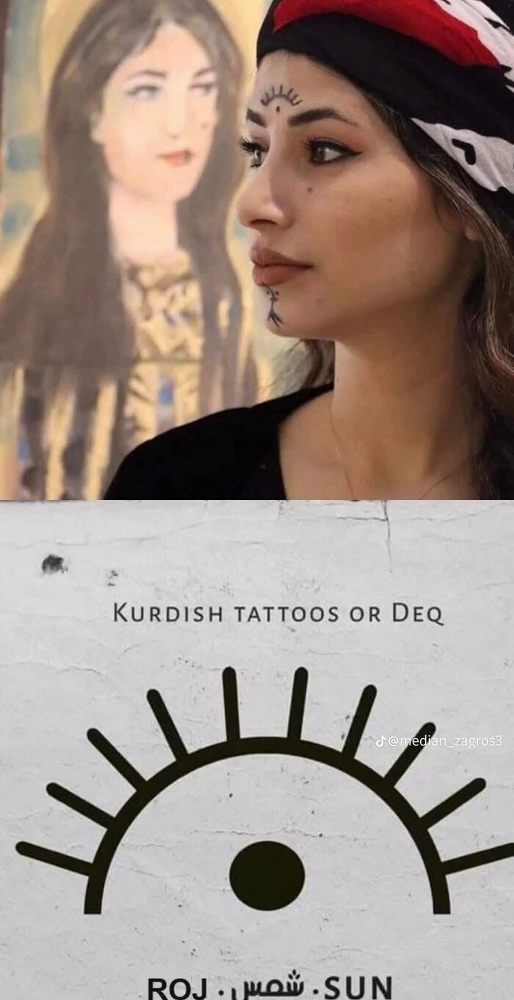
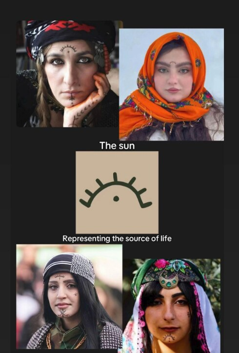

The name and the logo
Why Roj, and where its sun comes from.
Roj: the sun, and the day
In Kurdish, roj (Kurmanji) and ڕۆژ (Sorani) mean both the sun and the day. A solar calendar counts days by the sun, so one Kurdish word names both what the calendar follows and what it counts.
“Roj … stêrka navendî ya Pergala Rojê ye.” Roj is the central star of the Solar System. In Kurdish culture “it has an important place, and it has been designated a national symbol.” 1
“Roj yekîneke wext ye ku di bikaranîna rojane de bi bîst û çar saetan re têkildar e.” Roj is a unit of time associated, in everyday use, with twenty-four hours. 2
Kurdish Wiktionary lists the Kurmanji noun roj as the star the earth revolves around, which gives light and heat; the sunshine it gives; the time from morning to evening; and 24 hours, şevûroj, night and day. It traces the word to the Proto-Indo-European root *lewk-, “to shine, to give light”, through Proto-Iranian *rewç-. 3 The Sorani noun ڕۆژ (plural ڕۆژان, /roːʒ/) 4 is described on Sorani Wikipedia as a set period of 24 hours, of night and bright day, caused by the earth turning on its axis. 5
The same root gives rojname (newspaper), rojane (daily) and rojhilat (east, where the sun rises).
The logo
The logo joins two Kurdish suns: the Roj deq tattoo above, and the sun of the Kurdistan flag below. Together they show a sun rising on the horizon: a new day, a new roj.

The upper half: the Roj deq
Deq are the traditional tattoos of Kurdish women, worn on the face and hands. One of the best known designs is Roj, the sun: an arc with short rays above a single dot, worn on the forehead between the eyebrows. It stands for the sun as the source of life.


The logo keeps the shape of the Roj deq: the arc, nine rays and the dot, in ink black.
The lower half: the sun of the flag
The flag of Kurdistan is “a red, white, and green tricolour, with a yellow 21 rayed sun in the center (Kurdish Sun)”. “The main characteristic of the flag is the blazing golden sun emblem (Roj in Kurdish) at its center.” Its yellow “represents the source of life and light of the people”, and the 21 rays, which hold “religious and cultural importance in Yazidism, Yarsanism and Alevism”, symbolise “the rebirth of the Kurdish nation, identity, and dignity.” 6
The logo shows the lower half of that sun, its rays spreading below the horizon line in the same warm yellow.
Colours
| Use | Colour |
|---|---|
| Sun | #F5CD0E |
| Ink | #020202 |
| Face | #F8F8F8 |
The logo is generated by scripts/make-logo.py, so the SVG and every PNG size stay identical.
Sources
Accessed on 25 October 2026.
- Roj (stêrk), Wîkîpediya. ku.wikipedia.org/wiki/Roj_(stêrk)
- Roj (dem), Wîkîpediya. ku.wikipedia.org/wiki/Roj_(dem) (the article notes that it does not cite sources yet)
- roj, Wîkîferheng. ku.wiktionary.org/wiki/roj
- ڕۆژ, Wîkîferheng. ku.wiktionary.org/wiki/ڕۆژ
- ڕۆژ, Sorani Wikipedia. ckb.wikipedia.org/wiki/ڕۆژ (the article notes that it does not cite sources yet)
- Flag of Kurdistan, Wikipedia. en.wikipedia.org/wiki/Flag_of_Kurdistan
Image credits
- Flag of Kurdistan: Wikimedia Commons, public domain.
- Roj logo: GPL-3.0-or-later, like the rest of Roj.